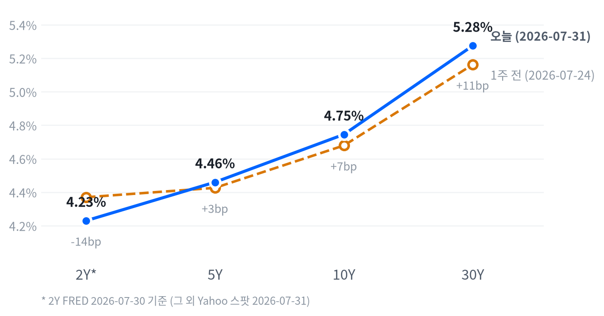

이날 장을 관통한 동인은 세 갈래였다. 아마존의 견조한 2분기 실적이 소비재·기술주 심리를 지탱했고, 삼성전자·SK하이닉스가 사상 최대 실적(영업이익 각각 89.5조원·60.54조원)과 함께 코스피 사상 최대폭 반등을 이끌며 메모리 섹터 전반에 온기를 확산시켰다. 여기에 국채 금리가 장중 4.737%(10년물)까지 치솟으며 지수 상승폭을 제한하는 세 번째 힘으로 작용했다.
크로스에셋 흐름은 대체로 정합적이었다. 금리 급등이 Materials(-2.34%) 등 경기민감 섹터와 금(-0.04%)을 동시에 짓눌렀고, 러셀2000(-0.50%)이 대형주보다 부진했던 것도 금리 민감도가 높은 소형주의 특성과 부합한다. 다만 국채 금리 급등에도 달러(DXY -0.21%)가 오히려 약세를 보인 점은 통상적 상관관계에서 벗어난 부분으로, 실적 이벤트를 둘러싼 리스크 심리가 금리·통화 간 연결고리를 일시적으로 흐트러뜨린 것으로 보인다.
다음 촉매는 마이크론의 방향 전환 여부다. 장중 +6.4%에서 -5.90%로 뒤집힌 만큼 마이클 버리의 숏 포지션 확대 보도가 사실로 재확인되는지, 그리고 국채 금리가 추가로 오르는지가 메모리 섹터 전반의 다음 방향을 가른다. 아울러 ECI·Chicago PMI가 나란히 컨센서스를 상회한 만큼 다음 주 ISM 제조업 지수와 고용 지표에서 같은 재가열 신호가 반복되는지가 금리·성장주 밸류에이션의 핵심 확인 트리거로 남아 있다.
| 지수 | 종가 | 등락 | 등락률 |
|---|---|---|---|
| S&P 500 Growth | 135.25 | +1.92 | +1.44% |
| Nasdaq | 25,373.85 | +251.67 | +1.00% |
| S&P 500 | 7,489.72 | +52.09 | +0.70% |
| Dow | 52,485.03 | +276.97 | +0.53% |
| S&P 500 Value | 231.71 | -0.45 | -0.19% |
| Russell 2000 | 2,931.34 | -14.76 | -0.50% |
| 섹터 | 종가 | 등락 | 등락률 |
|---|---|---|---|
| Consumer Disc. | 116.09 | +3.70 | +3.29% |
| Comm. Services | 108.24 | +1.66 | +1.56% |
| Energy | 59.55 | +0.59 | +1.00% |
| Industrials | 179.84 | +1.45 | +0.81% |
| Financials | 56.94 | -0.06 | -0.11% |
| Technology | 175.35 | -0.38 | -0.22% |
| Consumer Staples | 85.05 | -0.42 | -0.49% |
| Real Estate | 45.07 | -0.23 | -0.51% |
| Health Care | 162.55 | -0.97 | -0.59% |
| Utilities | 44.35 | -0.31 | -0.69% |
| Materials | 50.43 | -1.21 | -2.34% |
나스닥은 개장가(25,327.02) 대비 10:00에 장중 저점(25,004.33, -1.27%)까지 밀렸다가 오후 내내 되돌리며 15:30에 장중 고점(25,460.86, 개장가 대비 +0.53%)을 찍고 종가 25,373.85(+1.00%)로 마감하는 전형적인 V자 반등을 그렸다. S&P500도 같은 시각(10:00) 저점(7,399.83, -0.83%)을 찍은 뒤 15:30 고점(7,512.04, +0.67%)까지 오르며 나스닥과 거의 동일한 궤적을 보였다.
러셀2000은 대형주와 결이 달랐다. 개장 직후인 09:30에 이미 장중 고점(2,955.83, 개장가 대비 +0.10%)을 형성한 뒤 곧바로 밀리기 시작해 10:00에 저점(2,902.47, -1.71%)까지 낙폭을 키웠고, 이후 낙폭을 일부만 되돌린 채 2,930.73(-0.50%)으로 마감해 대형주 대비 뚜렷한 상대적 약세를 보였다. 오전 내내 이어진 매도 압력은 국채 금리가 장중 4.737%(10년물)까지 급등한 것과 시차가 겹치는데, 금리에 민감한 소형주가 대형 기술주보다 그 충격을 더 오래 받은 것으로 보인다.
개별 종목에서는 엔비디아가 10:00에 저점(194.95달러, 개장가 대비 -1.76%)을 찍은 뒤 15:30 고점(201.97달러, +1.78%)까지 반등해 지수와 같은 V자 패턴을 그렸고 종가는 200.75달러(+2.93%)로 강세 마감했다.
마이크론은 장중 한때 +6.4%까지 올랐다가 3:05pm ET 기준 -4.1%까지 반락하고 최종 -5.90%로 마감하는 큰 진폭을 보였다. 초반 강세는 아마존·애플 실적에서 메모리 지출 축소 계획이 없다는 점이 확인된 데 따른 것이었으나, 국채 금리 급등에 더해 '빅쇼트'의 마이클 버리가 약 880달러 부근에서 마이크론 숏 포지션을 늘렸다는 보도(Benzinga, Fool.com, TradingKey)가 나오며 반락 폭이 커졌다.
이날 장은 아마존의 견조한 2분기 실적과 애플의 부진한 향후 매출 전망이 정면으로 부딪힌 하루였다. 아마존이 이끈 소비재·커뮤니케이션 계열 강세(Consumer Disc. +3.29%, Comm. Services +1.56%)가 지수 상단을 지탱한 반면, 애플의 부품 원가 상승·핵심 사업부 성장 둔화 우려는 Technology 섹터를 -0.22%로 끌어내렸다.
Materials(-2.34%)가 이날 가장 부진한 섹터로 남았는데, 국채 금리가 다년 최고치로 급등하며 할인율 부담이 원자재·경기민감 섹터 전반의 발목을 잡은 결과로 보인다. S&P500 Growth(+1.44%)와 Value(-0.19%)의 격차도 재차 벌어져 금리 급등 속에서도 실적 모멘텀이 있는 성장주로 자금이 쏠리는 흐름이 이어졌다.
포지셔닝 관점에서는 마이크론의 장중 반전(한때 +6.4%에서 최종 -5.90%)이 이날 가장 중요한 확인 트리거였다. 메모리 수요 스토리 자체는 아마존·애플 발언으로 재확인됐지만, 금리 급등과 숏 포지션 확대 보도가 겹치면 개별 종목 차원에서도 하루 만에 방향이 뒤집힐 수 있다는 점을 보여준 사례로, 다음 주 금리 흐름과 마이크론의 추가 반등 여부를 함께 확인할 필요가 있다.
| 만기 | 07-31 종가 | 전일比(bp) | 1주 전 | 주간 변화(bp) |
|---|---|---|---|---|
| 2Y* | 4.23% | +1.0bp | 4.37% | -14.0bp |
| 5Y | 4.460% | +8.5bp | 4.426% | +3.4bp |
| 10Y | 4.745% | +8.2bp | 4.679% | +6.6bp |
| 30Y | 5.275% | +6.7bp | 5.162% | +11.3bp |

2Y*(FRED 2026-07-30)·5Y·10Y·30Y(Yahoo 2026-07-31) 국채금리 커브 — 별표(*) 표기된 2Y는 스팟 지수가 없어 하루 이상 뒤진 기준일의 FRED 값임에 유의. 1주 전 대비 2Y는 14.0bp 하락한 반면 5Y·10Y·30Y는 각각 3.4bp·6.6bp·11.3bp 올라 장기 구간일수록 상승폭이 컸다.
당일(07-31) 기준 5s30s 스프레드는 81.5bp로, 전일(07-30, 83.3bp) 대비 1.8bp 좁혀졌다. 5Y(+8.5bp)가 30Y(+6.7bp)보다 더 크게 올라 벨리 구간이 장기물보다 빠르게 반응한 결과로, 하루 단위로 보면 소폭의 베어 플래트닝이었다.
다만 1주 전(07-24 Yahoo 동일자 기준 73.6bp)과 비교하면 5s30s는 오히려 7.9bp 벌어져 있어, 이번 주 전체로는 장기 구간이 벨리보다 더 크게 밀린 베어 스티프닝 추세가 이어지고 있다. 하루짜리 변동과 한 주짜리 추세가 서로 다른 방향을 가리키는 셈이다.
2s10s 스프레드는 51.5bp(2Y FRED 07-30 vs 10Y Yahoo 07-31 기준)인데, 같은 날짜로 맞춘 FRED 동일자 기준으로는 45.0bp로 6.5bp가량 차이가 나며 이는 두 다리의 기준일이 다른 데서 오는 괴리다. 이 날짜 불일치 때문에 2s10s의 하루 단위 변화를 단정적으로 말하기는 어렵지만, FRED 동일자 기준으로 한 주 전(34.0bp)과 비교하면 11.0bp 벌어져 있어 2Y·10Y 구간에서도 완만한 스티프닝이 확인된다.
연구노트에 따르면 10년물은 이날 장중 4.737%까지 치솟아 2025년 1월 이후 최고치를 기록했다. ECI(+0.9%, 컨센서스 상회)·Chicago PMI(57.6, 컨센서스 상회)가 겹치며 성장·임금 재가열 우려가 장기금리를 밀어올린 만큼, 장기 듀레이션 확대는 아직 이르다고 판단한다. 벨리~단기 구간 중심의 숏~중립 듀레이션을 유지하되, 다음 주 ISM 제조업 지수·고용 지표에서 인플레이션 재점화가 추가로 확인되면 장기물 비중을 더 줄이는 손절 기준으로, 반대로 10Y가 4.65% 아래로 되돌려지면 장기물 재진입을 검토하는 확인 트리거로 삼을 만하다.
| 통화쌍 | 종가 | 등락 | 등락률 |
|---|---|---|---|
| USD/JPY | 157.40 | -2.78 | -1.74% |
| EUR/USD | 1.1527 | +0.0060 | +0.52% |
| DXY | 99.80 | -0.21 | -0.21% |
| USD/KRW | 1,442.07 | -0.21 | -0.01% |
엔화가 이날 FX 중 가장 큰 폭으로 움직였다. USD/JPY는 04:00에 장중 고점(160.88, 개장가 대비 +0.77%)을 찍은 뒤 21:30까지 저점(157.15, -1.56%)으로 미끄러지며 엔화가 꾸준히 강세를 보였고, 종가는 157.40(전일比 -1.74%)으로 마감했다.
DXY(-0.21%)도 완만한 약세를 보이며 EUR/USD(+0.52%) 강세를 뒷받침했지만, 낙폭은 엔화 움직임에 비하면 작았다. 국채 금리가 다년 최고치로 급등했음에도 달러가 오히려 약세를 보인 점은 금리·통화 간 통상적 상관관계와는 다소 어긋나는데, 연구노트에서 구체적 촉매가 확인되지 않는 만큼 이 부분은 아마존·애플 실적 발표를 둘러싼 리스크 심리 변화의 부산물로 잠정 해석한다.
USD/KRW(-0.01%)는 사실상 보합에 머물러 국채 금리 급등이나 코스피의 사상 최대폭 반등이 원화 자체에는 뚜렷한 방향성을 주지 못했다.
| 품목 | 종가 | 등락 | 등락률 |
|---|---|---|---|
| WTI | $86.80 | +3.21 | +3.84% |
| Natural Gas | $2.792 | +0.034 | +1.23% |
| Brent | $90.12 | +1.09 | +1.22% |
| Gold | $4,098.60 | -1.50 | -0.04% |
최대 변동 품목은 WTI(+3.84%)다. 새벽 01:30에 장중 저점(81.06달러, 개장가 대비 -1.55%)을 찍은 뒤 이후 지속적으로 상승해 16:30 마감 직전 고점(86.87달러, +5.50%)까지 오르는 강한 추세를 보였고, 종가는 86.80달러(전일比 +3.84%)로 마감했다. 저점과 고점이 하루 종일 벌어진 구간(약 7%포인트)이라는 점에서 장 초반 저가매수세가 장 후반까지 꾸준히 유입된 하루였다.
Brent(+1.22%)·Natural Gas(+1.23%)도 함께 올랐지만 WTI만큼 뚜렷하진 않았다. Gold는 오전 10:00에 저점(4,076.40달러, 개장가 대비 -1.36%)을 찍었다가 소폭 되돌렸으나 종가는 4,098.60달러(-0.04%)로 사실상 보합에 그쳤는데, 이는 국채 금리가 다년 최고치로 급등하며 무이자자산인 금의 상대매력을 낮춘 결과로 볼 수 있다.
유가와 금이 반대 방향으로 움직인 점이 눈에 띈다. 금리 급등이라는 같은 재료가 금에는 하방 압력으로, 원유에는 뚜렷한 영향을 주지 못한 채 자체 수급 요인이 더 크게 작용한 하루였다.
| 자산군 | 판단 | 근거 |
|---|---|---|
| 주식 | 선별적 리스크온, 실적 확인 우선 | 아마존 실적 호조가 소비재·커뮤니케이션 섹터를 밀어올렸으나 애플 실적 우려로 기술 섹터는 약세, 금리 급등이 상단을 제한해 종목별 옥석 가리기 국면 |
| 채권 | 숏~중립 듀레이션, 장기물 신중 | 10년물이 장중 4.737%로 2025년 1월래 최고치를 찍고 ECI·Chicago PMI가 나란히 컨센서스를 상회해 인플레이션·성장 재가열 우려가 장기금리를 지지 |
| FX | 엔화 강세 주목, 달러 약세 순응 | USD/JPY가 장중 -1.56%까지 미끄러지며 FX 중 최대 변동을 기록, 금리 급등에도 달러가 약세를 보인 비정형적 흐름이라 방향성 베팅보다 관찰 우선 |
| 원자재 | 유가 강세 추종, 금 관망 | WTI가 하루 종일 저점 대비 7%포인트 가까이 벌어지는 강한 상승 추세를 보인 반면 금은 금리 급등에 눌려 보합, 원자재 내 방향이 뚜렷하게 엇갈림 |
| 메모리 | 한국 대형주 온기, 미국은 확인 우선 | 삼성전자(+26.81%)·SK하이닉스(+29.95%)가 사상 최대 실적과 함께 폭등한 반면 마이크론은 버리 숏 포지션 확대 보도와 금리 급등에 -5.90%로 반락, 한·미 메모리주 온도차가 뚜렷 |
| AI 인프라 | 개별 실적·수주 확인 기반 확대 | 버티브(+6.18%)·코히런트(+5.55%) 등 데이터센터 인프라·광학 부품주가 동반 강세를 보였고 RBC·KeyBanc가 마벨 목표주가를 상향하는 등 개별 펀더멘털 뒷받침 확인 |
마이크론 추가 약세 확산: 마이클 버리의 숏 포지션 확대설이 사실로 재확인되고 국채 금리가 추가로 급등하면 마이크론發 조정이 메모리 섹터 전반으로 번질 수 있다.
금리 재급등에 따른 밸류에이션 부담: ECI·Chicago PMI 서프라이즈가 다음 지표에서도 반복 확인돼 연준의 인하 재개가 지연되면 30Y가 추가로 밀리며 성장주 밸류에이션 압박이 커질 수 있다.
코스피 급등 되돌림: 삼성전자·SK하이닉스의 사상 최대폭 반등이 직전 3거래일 급락(-17%)에 대한 레버리지 성격의 반등이라면(Invezz의 신중론 참고), 과열 되돌림이 나타날 소지가 있다.
삼성전자·SK하이닉스 폭등, 코스피 사상 최대폭 반등 (+26.81%/+29.95%) — 미국 반도체 랠리 동조화(필라델피아 반도체지수 SOX +8.19%), 최태원 SK그룹 회장의 SK하이닉스 장내 직접 매수, 외국인 3조원 이상 순매수, 삼성전자·SK하이닉스의 사상 최대 실적(영업이익 각각 89.5조원·60.54조원) 발표가 겹치며 직전 3거래일 급락(-17%) 이후 반등했다(KED Global, Bloomberg, Benzinga, Invezz).
마이크론 반락 (-5.90%) — 장중 한때 +6.4%까지 올랐다가 3:05pm ET 기준 -4.1%까지 반락, 아마존·애플의 메모리 지출 유지 발언(긍정)과 국채 금리 급등·마이클 버리 숏 포지션 확대 보도(부정)가 교차하며 하루 만에 방향이 뒤집혔다(Benzinga, Fool.com, TradingKey).
아마존발 소비재 강세 (Consumer Disc. +3.29%) — 아마존이 견조한 2분기 실적을 발표한 반면 애플은 부진한 향후 매출 전망과 부품 원가 상승, 핵심 사업부 성장 둔화 우려로 하락해 대형 기술주 내에서도 명암이 갈렸다.
| 종목 | 종가 | 등락 | 등락률 |
|---|---|---|---|
| Micron | $823.03 | -51.63 | -5.90% |
| Western Digital | $544.84 | +11.80 | +2.21% |
| Seagate | $856.13 | +4.45 | +0.52% |
| Nvidia | $200.75 | +5.71 | +2.93% |
| Samsung Elec | ₩262,500 | +55,500 | +26.81% |
| SK hynix | ₩1,718,000 | +396,000 | +29.95% |
이날 가장 두드러진 뉴스는 삼성전자(+26.81%)·SK하이닉스(+29.95%)의 폭등과 이에 힘입은 코스피의 사상 최대 일간 상승률(+17.9%)이다. 배경은 크게 세 가지로, 미국 반도체주 급등에 연동된 흐름(필라델피아 반도체지수 SOX +8.19%, MSCI Korea ETF +11.79%), 최태원 SK그룹 회장의 SK하이닉스 주식 장내 직접 매수(첫 사례)와 외국인 3조원 이상 순매수 유입, 그리고 삼성전자(영업이익 89.5조원, 매출 171.5조원 사상 최대)·SK하이닉스(영업이익 60.54조원, 영업이익률 76%)의 실적 서프라이즈다(KED Global, Bloomberg, Benzinga, Invezz, sedaily).
이번 급등이 직전 3거래일간 코스피 -17% 급락에 대한 반등이라는 점도 함께 보도됐다. 일부 매체(Invezz)는 레버리지 ETF 수요 등을 근거로 이 반등이 지속되지 않을 수 있다는 신중론도 제기하고 있어, 과열 되돌림 가능성을 열어둘 필요가 있다.
반면 마이크론(-5.90%)은 전일(+18%) 급등을 상당폭 반납했다. 장중 한때 +6.4%까지 올랐다가 3:05pm ET 기준 -4.1%로 반락했는데, 초반 강세는 아마존·애플 실적에서 메모리 지출 축소 계획이 없다는 점이 확인된 데 따른 것이었지만 국채 금리 급등과 마이클 버리의 숏 포지션 확대 보도(Benzinga, Fool.com, TradingKey)가 겹치며 되돌려졌다. 웨스턴디지털(+2.21%)·시게이트(+0.52%)는 개별 뉴스가 확인되지 않아 반도체 섹터 전반의 온기 확산으로 추정된다.
투자 관점에서는 한국 메모리 대형주의 실적 모멘텀 자체는 견조하게 확인된 반면, 미국 상장 메모리주(마이크론)는 금리·숏 포지션 변수에 더 민감하게 반응하고 있어 지역별 온도차를 먼저 확인하고 접근하는 편이 합리적이다.
| 종목 | 분야 | 종가 | 등락 | 등락률 |
|---|---|---|---|---|
| Vertiv | 데이터센터 냉각/전력관리 | $241.57 | +14.07 | +6.18% |
| Coherent | 광통신 부품 | $262.89 | +13.83 | +5.55% |
| Lumentum | 광통신 부품 | $713.94 | +20.70 | +2.99% |
| Marvell | 반도체/데이터센터 커넥티비티 | $187.56 | +4.26 | +2.32% |
| GE Vernova | 전력 인프라/터빈 | $990.29 | +8.31 | +0.85% |
마벨(+2.32%)이 이날 가장 구체적인 개별 뉴스 흐름을 보였다. RBC캐피털마켓은 향후 3년간 40%대 매출 성장 지속을 전망하며 데이터센터 매출이 올해·내년 각각 50%대 성장할 것으로 보고 목표주가 360달러를 제시했고, KeyBanc는 아시아 현장 점검에서 AI 데이터센터 칩 수요와 부품 공급 타이트닝을 확인해 목표주가를 385달러에서 400달러로 상향했다. 마벨은 인도(방갈로르·하이데라바드)에 3년간 2.5억달러를 투자해 인력을 두 배로 늘리는 AI 반도체 R&D 확장 계획도 발표했다(RBC/KeyBanc 인용).
코히런트(+5.55%)는 광섬유 부품이 노후 구리 케이블을 대체하는 흐름의 수혜주로 거론되며 이날 AI 인프라 그룹 중 두 번째로 큰 상승폭을 기록했다. 버티브(+6.18%)는 데이터센터·통신망·산업용 인프라의 설계·제조·서비스 기업으로, AI 인프라 성장 수혜주 중 이날 가장 큰 상승폭을 보였다.
루멘텀(+2.99%)·GE 버노바(+0.85%)는 개별 촉매가 확인되지 않았으나, AI 인프라·전력 테마 전반의 강세에 동반한 것으로 추정된다.
투자 관점에서는 마벨처럼 애널리스트 목표주가 상향과 구체적 수요 확인이 뒷받침되는 종목이 테마 전체보다 우선순위가 높다고 판단하며, 개별 촉매가 불명확한 종목은 향후 실적·가이던스로 재확인이 필요하다.
| 지표 | Actual | Forecast | Previous | 발표일/기준 | 판정 |
|---|---|---|---|---|---|
| Employment Cost Index QoQ (2Q26) | +0.9% | +0.8% | +0.9%(1Q26) | 2026-07-31(금) 08:30 ET | 상회▲ |
| Initial Jobless Claims (07-25주) | 197K | — | 188K | 2026-07-30 | — |
| Continuing Jobless Claims (07-18주) | 1,782K | — | 1,789K | 2026-07-30 | — |
| Initial Claims 4주 이동평균 | 202.75K | — | 207.75K | 2026-07-30 | — |
| JOLTS 구인건수 | 7,594K | — | 7,585K | 기준월: 2026-05 | — |
| Nonfarm Payrolls (전월비) | +57K | — | +129K | 기준월: 2026-06 | — |
| 실업률 | 4.2% | — | 4.3% | 기준월: 2026-06 | — |
| 시간당 평균임금 MoM | +0.35% | — | +0.27% | 기준월: 2026-06 | — |
| 지표 | Actual | Forecast | Previous | 발표일/기준 | 판정 |
|---|---|---|---|---|---|
| Chicago PMI (7월) | 57.6 | 55.0 | 56.7 | 2026-07-31(금) 09:45 ET | 상회▲ |
| 실질GDP 성장률 (연율, 1Q26) | +1.5% | — | +2.1% | 기준분기: 2026 1Q | — |
| 산업생산 MoM | +0.08% | — | +0.14% | 기준월: 2026-06 | — |
| 내구재수주 MoM | +0.32% | — | -4.04% | 기준월: 2026-06 | — |
| 신규주택판매 | 628K | — | 618K | 기준월: 2026-06 | — |
| 기존주택판매 | 4.09M | — | 4.19M | 기준월: 2026-06 | — |
| 지표 | Actual | Forecast | Previous | 발표일/기준 | 판정 |
|---|---|---|---|---|---|
| 미시간대 소비자심리지수 확정치 (7월) | 55.2 | 54.0 | 54.4(잠정치) | 2026-07-31(금) 10:00 ET | 상회▲ |
| 소매판매 MoM | +0.22% | — | +1.02% | 기준월: 2026-06 | — |
| 미시간대 소비자심리지수 (6월, FRED) | 49.5 | — | 44.8(5월) | 기준월: 2026-06 | — |
| 지표 | Actual | Forecast | Previous | 발표일/기준 | 판정 |
|---|---|---|---|---|---|
| 미시간대 1년 기대인플레 확정치 (7월) | 4.2% | 4.2% | 4.6%(6월 확정) | 2026-07-31(금) 10:00 ET | 부합= |
| 미시간대 5년 기대인플레 확정치 (7월) | 3.3% | 3.3% | 3.3%(6월, 변동없음) | 2026-07-31(금) 10:00 ET | 부합= |
| CPI YoY | 3.73% | — | 4.27% | 기준월: 2026-06 | — |
| CPI MoM | -0.42% | — | +0.47% | 기준월: 2026-06 | — |
| Core CPI YoY | 2.81% | — | 2.96% | 기준월: 2026-06 | — |
| Core CPI MoM | -0.02% | — | +0.21% | 기준월: 2026-06 | — |
| PPI 최종수요 MoM | -0.28% | — | +0.62% | 기준월: 2026-06 | — |
| PCE 물가지수 YoY | 3.67% | — | 4.08% | 2026-07-30(목) | — |
| Core PCE YoY | 3.29% | — | 3.42% | 2026-07-30(목) | — |
| 미시간대 1년 기대인플레 (6월, FRED) | 4.6% | — | 4.8%(5월) | 기준월: 2026-06 | — |
ECI(+0.9%)와 Chicago PMI(57.6)가 나란히 컨센서스(각각 +0.8%, 55.0)를 상회하며 임금 비용과 제조업 심리 모두 예상보다 뜨겁다는 신호를 냈다. 이 조합이 이날 국채 금리 급등(10년물 장중 4.737%, 2025년 1월래 최고)의 배경으로 작용했고, 주식시장은 아마존의 개별 실적 호재로 이를 상쇄하며 상승 마감했다.
CME FedWatch 기준(2026-07-28 시점, 7/29 FOMC 직전 마지막 확인치) 9/16 회의에서 25bp 인하 확률은 54.4%로 집계됐다. 다만 7/29 FOMC 동결과 3인의 인상 소수의견 이후, 그리고 이날 ECI·Chicago PMI 서프라이즈 이후 갱신된 확률은 이번 리서치에서 확인되지 않아 이번 호에서는 반영하지 못했다.
한편 미시간대 소비자심리지수 확정치(55.2)는 잠정치(54.4)·컨센서스(54.0)를 모두 웃돌았고 1년 기대인플레이션 확정치(4.2%)는 6월(4.6%)보다 낮아져, 성장·임금 지표의 뜨거운 신호와 소비자 체감 인플레이션 완화가 같은 날 동시에 나타나는 다소 엇갈린 조합을 보였다.
심리(선행)축은 개선 쪽이다. 미시간대 소비자심리지수 확정치(55.2)가 잠정치(54.4)·컨센서스(54.0)를 모두 웃돌았고, 1년 기대인플레이션(4.2%)도 6월(4.6%)보다 낮아져 소비자 체감 물가 부담이 완화되는 모습이 확인된다.
활동(중행)축은 혼조다. Chicago PMI(57.6)는 컨센서스(55.0)와 전월(56.7)을 모두 상회하며 최신 제조업 심리는 개선세를 보였지만, 1분기 실질GDP 성장률(+1.5%)은 컨센서스(2.1%)와 직전 분기(2.1%)를 크게 밑돌아 활동 지표 내에서도 최신 서베이와 다소 시차가 있는 확정 지표 사이에 온도차가 있다.
성적표(후행)축도 혼조다. 신규실업수당청구(197K)가 전주(188K)보다 늘고 비농업 고용(+57K)도 전월(+129K)보다 크게 둔화됐지만, 실업률(4.2%)은 오히려 개선(전월 4.3%)됐고 ECI(+0.9%)·시간당 평균임금(+0.35%)은 모두 전월·컨센서스를 상회해 고용 증가세는 둔화되는데도 임금 비용은 오히려 단단해지는 비대칭이 나타난다. 이는 심리축의 인플레이션 기대 완화와는 다소 상충되는 신호다.
기본 시나리오는 고용 증가세가 완만히 둔화되는 가운데 임금·서비스 물가는 당분간 끈적하게 남는 경로다. ECI·Chicago PMI 서프라이즈가 근거로, 연준이 7/29 동결과 3인의 인상 소수의견을 통해 이미 이런 재가열 리스크를 반영한 것으로 볼 수 있다.
대안 시나리오는 미시간대 지표가 보여준 소비자 심리 개선과 기대인플레이션 완화가 이어지며 디스인플레이션 흐름이 재개되는 경로다. CPI·Core PCE YoY가 이미 6월 기준 3%대까지 낮아진 만큼, 다음 지표에서 ECI·PMI의 재가열 신호가 완화되면 연준의 인하 재개 시점이 앞당겨질 수 있다.
시나리오를 가를 핵심 일정은 다음 주 ISM 제조업 지수와 8월 고용보고서다. 자산배분 관점에서는 두 시나리오 모두에서 장기 듀레이션 채권 확대를 이들 지표 확인 전까지 보류하고, 성장주 익스포저는 마이크론 사례처럼 개별 이벤트 리스크를 함께 점검하며 단계적으로 조정하는 편이 합리적이다.